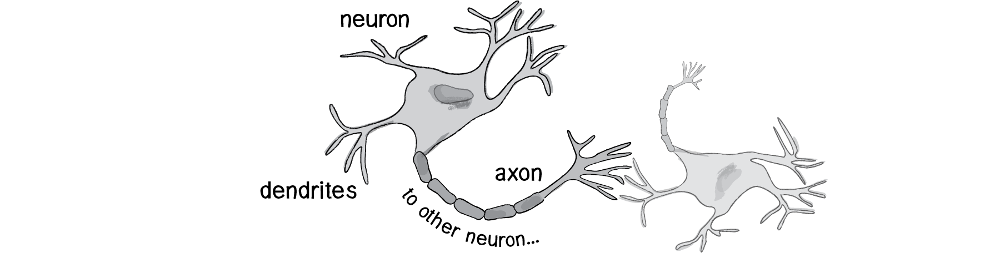
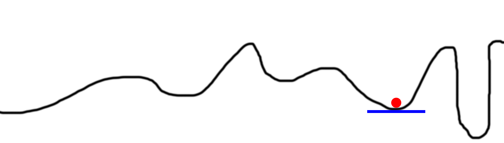

Neural Network 101
Introdução
Uma rede neural é uma Universal Approximator ou, em outras palavras, uma função altamente flexível que, automaticamente, consegue adaptar seu comportamento de modo a satisfazer a relação entre os dados passados como parâmetros e os dados esperados como resultado relativo.
Neuron
- Inputs (Dendritos)
- Processador (Núcleo celular)
- Output (Axônio)
O neurônio armazena os inputs, multiplica pelos respectivos pesos (weights) e soma todos os resultados de cada operação. Se estiver dentro de um certo limite, ele libera o output.
Função de Ativação
- Usada para um comportamento não-linear.
- Recebe um input para normalizar o output (entre 0 e 1).
- Geralmente é uma função sigmóide.
Feedfoward Network
Os outputs da camada de input serve de input para as próximas camadas (camada escondida). Esse processo é repetio até atingir a última camada (camada de output).
Então como a RN aprende? TREINANDO!
Algoritmo de Backpropagation
Etapas do algoritmo:
- Input -> Output;
- Depois disso, ele ensina qual deveria ser o verdadeiro output;
- Ajusta os pesos de acordo com o output ideal;
- Começa da camada de output até a camada de input (caminho reverso);
- Então testa o mesmo input, mas agora com os pesos ajustados;
- Repete o processo até o delta entre o output ideal e o output da rede neural seja pequeno o suficiente.
Gradient Descent
- Calcula a inclinação (slope) no na posição atual do X;
- Muda o X pela inclinação negativa (x = x - slope);
- Repete até a inclinação ser zero (slope == 0);
Problema: Poços locais
CODE TIME!
Treinando para um XOR
| Input | Input | Output |
|---|---|---|
| 0 | 0 | 0 |
| 0 | 1 | 1 |
| 1 | 0 | 1 |
| 1 | 1 | 0 |
var synaptic = require("synaptic");
// Create layers
var inputLayer = new synaptic.Layer(2);
var hiddenLayer1 = new synaptic.Layer(4);
var hiddenLayer2 = new synaptic.Layer(4);
var outputLayer = new synaptic.Layer(1);
// Create weights connections
inputLayer.project(hiddenLayer1);
hiddenLayer1.project(hiddenLayer2);
hiddenLayer2.project(outputLayer);
// Assemble the network
var myNetwork = new synaptic.Network({
input: inputLayer,
hidden: [
hiddenLayer1,
hiddenLayer2
],
output: outputLayer
});
// Defining our trainer
var trainer = new synaptic.Trainer(myNetwork);
var trainingSet = [
{ input: [0, 0], output: [0] },
{ input: [0, 1], output: [1] },
{ input: [1, 0], output: [1] },
{ input: [1, 1], output: [0] }
];
// Training!
trainer.train(
trainingSet,
{
rate: .1, // Learning rate
iterations: 100000, // Maximum number of Iterations
error: .0000005, // Minimum error
shuffle: true, // Shuffled after every iter.
cost: synaptic.Trainer.cost.MSE, // Self-explained
log: 1 // console.log the error and iter
}
);
// Test!
console.log("[0, 0] => [" + myNetwork.activate([0, 0]) + "]");
console.log("[0, 1] => [" + myNetwork.activate([0, 1]) + "]");
console.log("[1, 0] => [" + myNetwork.activate([1, 0]) + "]");
console.log("[1, 1] => [" + myNetwork.activate([1, 1]) + "]");